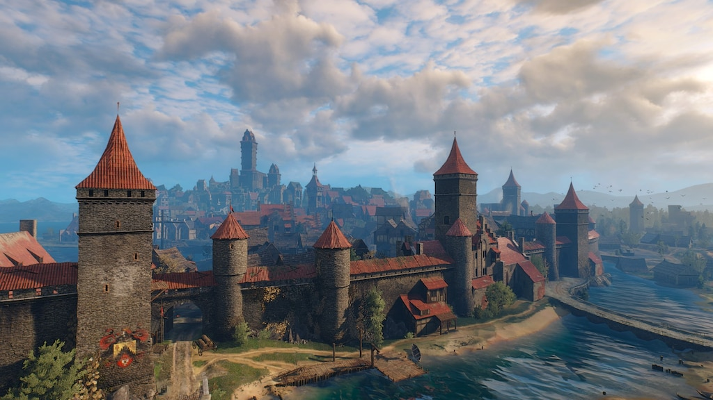

Město Novigrad
Novigrad je největší, nejlidnatější a nejbohatší metropole na celém Kontinentu.
Formálně se jedná o svobodné město, což znamená, že nepodléhá přímé nadvládě žádného z okolních království, ačkoliv geograficky leží na území Redanie.
S populací přesahující 30 000 obyvatel, vlastním loďstvem a obrovskou pokladnicí je Novigrad strategickým bodem, jehož ovládnutí může zvrátit průběh probíhající třetí války s Nilfgaardem.
Město je fascinujícím organismem, kde se luxusní paláce a chrámy střídají se špinavými uličkami chudinských čtvrtí.
Správa Novigradu je však extrémně komplikovaná.
Město nemá jediného absolutního vládce místo toho je bojištěm dvou hlavních sil: náboženského fanatismu a organizovaného zločinu.
Zatímco na povrchu a za dne vládne strach z Věčného ohně, v noci a v podzemí město ovládá tzv.
Syndikát neboli Velká čtyřka - vůdci kriminálních gangů, kteří kontrolují nelegální obchod, nevěstince, hazard a pašeráctví.
paradoxně jsou to právě oni, kdo udržuje ekonomiku města v chodu a brání ho před úplným kolapsem.
Novigradský přístav
Hospodářské srdce celé metropole.
Jde o rozsáhlou, hlučnou a špinavou čtvrť, která se rozkládá v jižní a západní části města podél ústí řeky Pontar do Velkého moře.
Právě zde se sbíhají obchodní cesty z celého známého světa, od Nilfgaardu až po Skellige.
Hospoda U Nikde: Vyhlášený přístavní lokál, kde se scházejí námořníci, žoldáci a pochybné existence.
Často zde začínají zaklínačské zakázky.
Skladiště a pašerácké skrýše: Desítky budov slouží k uchovávání legálního i nelegálního zboží.
Kontrolu nad nimi drží novigradské gangy.
Rybí trh: Místo, kde obyvatelé města nakupují čerstvé úlovky přímo z lodí. Hatoriho dílna, nalezneme v přístavu, kde potkáte jednoho z nejlepších kovářů/mečířů ve hře, Hattoriho, který se kvůli gangům musel přeorientovat na výrobu knedlíků.
Chrám věčného ohně
Na rozdíl od jiných náboženství na Kontinentu, věčný oheň neuctívá žádného personifikovaného boha.
Božská síla a naděje: Písma popisují oheň jako čistou, neměnnou božskou energii, která hoří v srdcích lidí.
Je symbolem přežití, pokroku, světla v temnotě a neustálého boje proti zlu.
Legenda o založení: Podle pověsti spatřili první lidští kolonisté v opuštěném elfském městě (budoucím Novigradu) podivnou záři vycházející z paláce.
Uvnitř potkali postavu hlídající velkou mísu s ohněm, která řekla: „Strážím Věčný oheň. Dokud bude na tomto místě plát, dotud toto město a váš rod vytrvají.“
Poté strážce zmizel a na tomto místě lidé postavili svůj první chrám.
Reálná ochrana: Kněží tvrdí, že oheň magicky chrání město před monstry.
Faktem je, že Novigrad za celou historii nikdo nedobyl, což církvi dodává obrovskou legitimitu.
V Novigradu se nachází celkem 19 svatyní, ale tou nejdůležitější je Velký chrám Věčného ohně stojící na samém vrcholu Chrámového ostrova.
Monumentální mramorová stavba postavená na základech původního elfského paláce dominuje celému panoramatu města. Uvnitř hoří hlavní posvátný plamen, který kněží udržují dnem i nocí.
Je zde také uložen sarkofág Proroka Lebiody, jehož ostatky věřící během svátků líbají.